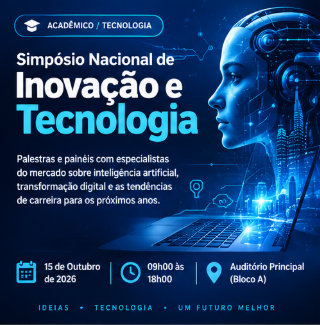
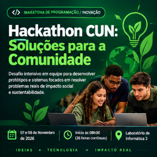
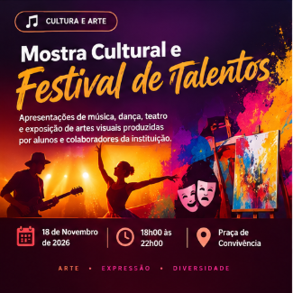
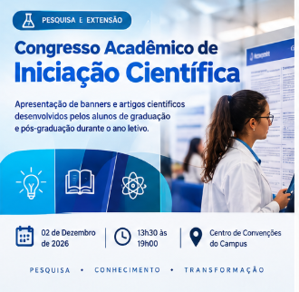
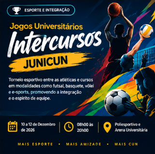

Centro Universitário Nacional
O Centro Universitário Nacional é uma instituição
dedicada à excelência acadêmica, inovação e desenvolvimento humano.
Nosso compromisso é transformar vidas por meio da educação acessível
e de alta qualidade, preparando alunos para os desafios do mercado
global com visão crítica, ética e empreendedora.
Com uma infraestrutura moderna, corpo docente qualificado e
metodologia focada na prática, oferecemos um ambiente propício para
a pesquisa, a extensão e o crescimento profissional contínuo.
Nossos Pilares
Inovação Acadêmica
Metodologias modernas focadas no aprendizado prático
e na resolução de problemas reais.
Excelência e Tradição
Ensino focado no rigor científico e no desenvolvimento
de competências para o futuro.
Inclusão e Acessibilidade
Compromisso de levar o ensino superior de qualidade
a todos os cantos do país.
Eventos do Centro Universitário Nacional
Confira os principais eventos acadêmicos, profissionais,
culturais e esportivos do CUN.

Simpósio Nacional de Inovação e Tecnologia
Data: 15 de Outubro de 2026
Horário: 09h00 às 18h00
Local: Auditório Principal (Bloco A)
Palestras e painéis com especialistas do mercado sobre
inteligência artificial, transformação digital e as
tendências de carreira para os próximos anos.
Feira de Carreiras e Empregabilidade
Data: 22 de Outubro de 2026
Horário: 10h00 às 17h00
Local: Saguão Central do CUN
Conecte-se com grandes empresas, participe de oficinas
de elaboração de currículo e participe de entrevistas
relâmpago para vagas de estágio e trainee.

Hackathon CUN: Soluções para a Comunidade
Data: 07 e 08 de Novembro de 2026
Horário: Início às 08h00
(36 horas contínuas)
Local: Laboratório de Informática 3
Desafio intensivo em equipe para desenvolver protótipos
e sistemas focados em resolver problemas reais de
impacto social e sustentabilidade.

Mostra Cultural e Festival de Talentos
Data: 18 de Novembro de 2026
Horário: 18h00 às 22h00
Local: Praça de Convivência
Apresentações de música, dança, teatro e exposição de
artes visuais produzidas por alunos e colaboradores
da instituição.

Congresso Acadêmico de Iniciação Científica
Data: 02 de Dezembro de 2026
Horário: 13h30 às 19h00
Local: Centro de Convenções do Campus
Apresentação de banners e artigos científicos
desenvolvidos pelos alunos de graduação e pós-graduação
durante o ano letivo.

Jogos Universitários Intercursos (JUNICUN)
Data: 10 a 12 de Dezembro de 2026
Horário: 08h00 às 20h00
Local: Poliesportivo e Arena Universitária
Torneio esportivo entre as atléticas e cursos em
modalidades como futsal, basquete, vôlei e e-sports,
promovendo a integração e o espírito de equipe.